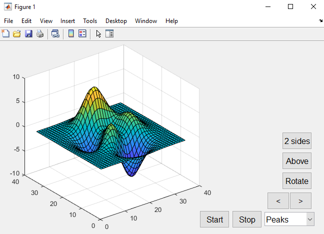
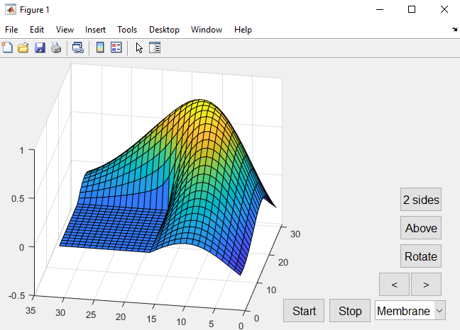
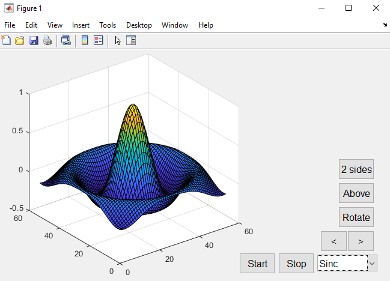
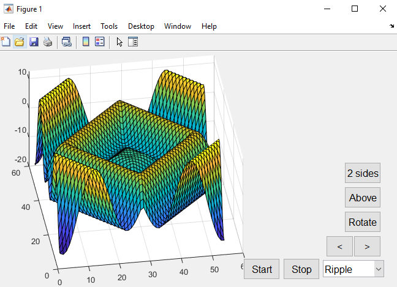
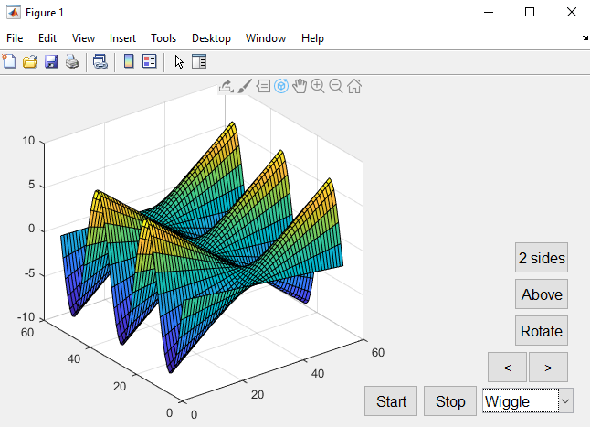
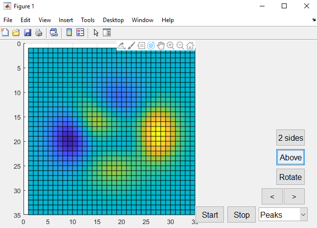
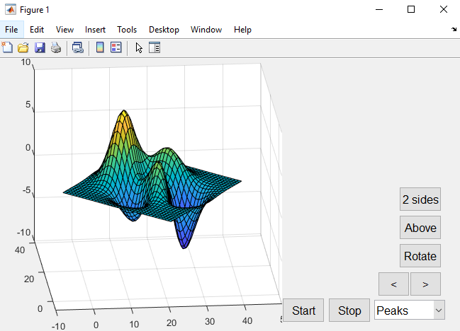
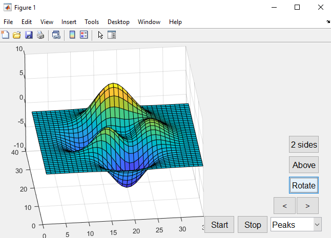

Startsjermen med funksjoner gir deg mulighet til å rotere figur og kamera, og bytte mellom 5 forskjellige figurer.
"2 sides" er for å se figuren fra den andre siden og tilbake til orginal posisjon.
"Above" viser figuren fra toppen.
"Rotate" roterer kamera rundt figuren.
< og > roterer selve figuren i rettningen med pilen.
"start" og "stop" er for å starte eller stoppe automatisk rotering av figuren.

Figur 1, "Peaks"

Figur 2, "Membrane"

Figur 3, "Sinc"

Figur 4, "Ripple"

Figur 5, "Wiggle"

Visning av "Above" funksjon på figur 1

Visning av rotering av figur 1

Visning av rotering av kamera til figur 1